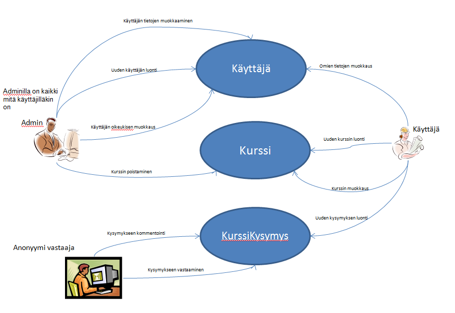
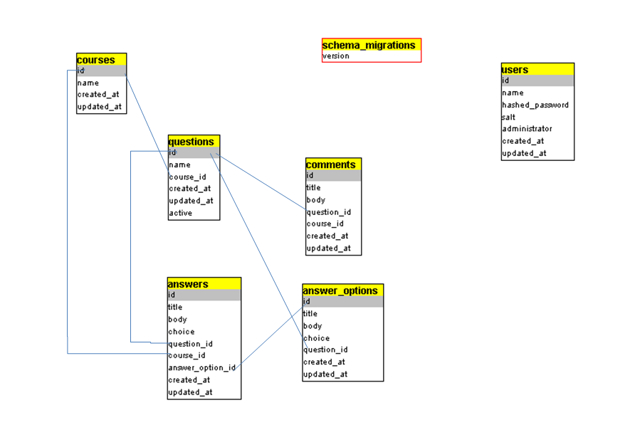
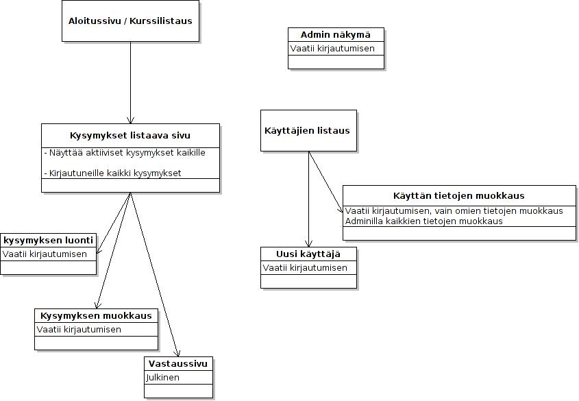

SuunnitteluDokumentti
Table of Contents
1 eka
1.1 toka
1.1.1 kolm
- nelj
- viis
- viis
2 JOHDANTO (1)
2.1 Järjestelmän tarkoitus
Järjestelmän käyttötarkoituksena on toteuttaa esimerkiksi kurssikyselyitä, joihin tässä tapauksessa opiskelijat voivat nopeasti vastata, näin saadaan hyödyllistä tietoa esim. kurssin tehtävien vaikseustasosta. Tavoitteena on toteuttaa järjestelmä, jolla voi kyselyitä, joihin vastaamiseen ei mene yli minuuttia.
2.2 Toimintaympäristö
- Missä laite ja ohjelmistoympäristössä järjestelmän on tarkoitus toimia.
- Sovellus toimii RoR ympäristoissä, joissa tuotantotietokanta on postgresql ja kehitys tietokanta on sqlite3. Nämä on helppo muuttaa.
- Sovellus toimii myös suoraan herokuun deployattuna.
- Ainakin ruby 1.9.2-p290llä ja rails 3.2.2llä sovellus toimii moitteetta
2.3 Toteutusympäristö
2.4 Missä ympäristössä työ toteutetaan.
- Ruby on rails kielellä ja deployaus herokuun.
3 Yleiskuva järjestelmästä (2)
3.1 Sidosryhmäkaavio

- Admin
On käyttäjä, jolle on annettu lisäoikeuksia - Käyttäjä
On sovellukseen kirjautunut käyttäjä, jolla oikeudet luoda uusia kursseja ja kysymyksiä - Anonyymi vastaaja
On esim. opiskelija, joka vastaa kyselyihin. Ei vaadi kirjautumista järjestelmään
3.2 Käyttäjäryhmät
- Kursilainen (ei autentikointia) tarkoitetaan kurssilaista, jolle ehdotetaan kyselyyn vastaamista.
- Tarjotaan vain vastaamista aktiivisiin kysymyksiin
- Tarjotaan vain vastaamista aktiivisiin kysymyksiin
- Kirjautunut käyttäjä on henkilö, jolla oikeudet luoda uusia kursseja ja kysymyksiä, sekä lukea kommentteja
- Käyttäjä voidaan korottaa adminiksi, jolloin kysymyksiä ja kursseja voi poistaa
- Käyttäjä voidaan korottaa adminiksi, jolloin kysymyksiä ja kursseja voi poistaa
4 Käyttätapaukset (3)
Pääsivulla / cources -sivulla
Kirjautunut käyttäjä
- On kaikista kursseista listaus
- Voi luoda uuden kurssin
- Voi muokata kurssin nimeä
- (Admin) voi poistaa kurssin
- voi siirtyä katselemaan kursseja
Peruskäyttäjä/Anonyymi
- Näkee kaikki kurssit
Kurssin sivulla / cources/:id
Kirjautunut käyttäjä
- Näkee kaikki kyselyt
- Voi luoda uusia kyselyitä
- (Admin) Voi poistaa kyselyitä, esim. jos kysymyksessä on virheitä
- Merkkaa mihin kysymyksiin vastaaminen mahdollista
Peruskäyttäjä/Anonyymi
- Näkee kysymykset, joihin vastaaminen mahdollista
Kysymyssivulla / cources/:id/:kysID
Kirjautunut käyttäjä
- Näkee vastaukset
- Voi vastata kysymykseen
- Näkee piirakakaavion tuloksista ja muut tulokset
- Näkee kysymykseen liittyvät kommentit
- Näkee kyselyn tulokset
- (Admin) voi poistaa kysymyksen
Peruskäyttäjä/Anonyymi
- Voi vastata aktiiviseen kysymykseen
- Voi kommentoida kysymystä
- Näkee vastauksen jälkeen jonkinasteisen graafin vastausten jakautumisesta
5 Järjestelmän tietosisältö (4)

6 Käyttöliittymän hahmotelma (5)

7 Relaatiotietokantakaavio (6)
CREATE TABLE "answer_options" ("id" INTEGER PRIMARY KEY AUTOINCREMENT NOT NULL, "title" varchar(255), "body" text, "choice" integer, "question_id" integer, "created_at" datetime NOT NULL, "updated_at" datetime NOT NULL);
CREATE TABLE "answers" ("id" INTEGER PRIMARY KEY AUTOINCREMENT NOT NULL, "title" varchar(255), "body" text, "choice" integer, "question_id" integer, "course_id" integer, "answer_option_id" integer, "created_at" datetime NOT NULL, "updated_at" datetime NOT NULL);
CREATE TABLE "comments" ("id" INTEGER PRIMARY KEY AUTOINCREMENT NOT NULL, "title" varchar(255), "body" text, "question_id" integer, "course_id" integer, "created_at" datetime NOT NULL, "updated_at" datetime NOT NULL);
CREATE TABLE "courses" ("id" INTEGER PRIMARY KEY AUTOINCREMENT NOT NULL, "name" varchar(255), "created_at" datetime NOT NULL, "updated_at" datetime NOT NULL);
CREATE TABLE "questions" ("id" INTEGER PRIMARY KEY AUTOINCREMENT NOT NULL, "name" varchar(255), "course_id" integer, "created_at" datetime NOT NULL, "updated_at" datetime NOT NULL, "active" boolean);
CREATE TABLE "schema_migrations" ("version" varchar(255) NOT NULL);
CREATE TABLE "users" ("id" INTEGER PRIMARY KEY AUTOINCREMENT NOT NULL, "name" varchar(255), "hashed_password" varchar(255), "salt" varchar(255), "administrator" boolean, "created_at" datetime NOT NULL, "updated_at" datetime NOT NULL);
CREATE INDEX "index_answer_options_on_question_id" ON "answer_options" ("question_id");
CREATE INDEX "index_answers_on_answer_option_id" ON "answers" ("answer_option_id");
CREATE INDEX "index_answers_on_course_id" ON "answers" ("course_id");
CREATE INDEX "index_answers_on_question_id" ON "answers" ("question_id");
CREATE INDEX "index_comments_on_course_id" ON "comments" ("course_id");
CREATE INDEX "index_comments_on_question_id" ON "comments" ("question_id");
CREATE INDEX "index_questions_on_course_id" ON "questions" ("course_id");
CREATE UNIQUE INDEX "unique_schema_migrations" ON "schema_migrations" ("version");
Date: 2012-05-03 21:15:36 EEST
HTML generated by org-mode 6.33x in emacs 23